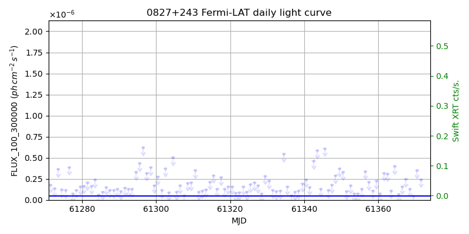
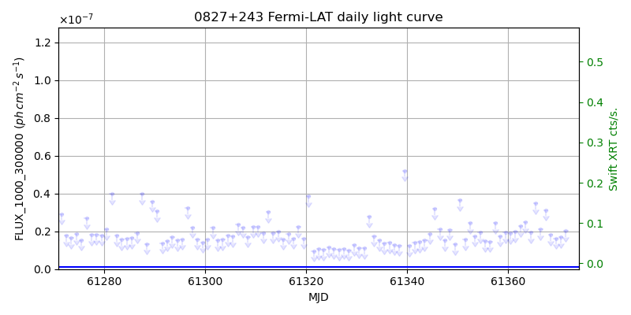

LAT Lightcurve site: https://fermi.gsfc.nasa.gov/ssc/data/access/lat/msl_lc/source/0827p243
Swift site: https://www.swift.psu.edu/monitoring/source.php?source=QSOB0827+243
NED: Query
Time of last update of this page: UT: 2026-11-28 16:19 (MJD: 61372.680)
| Property | Value |
|---|---|
| R.A. | 8:29:57.60 |
| Dec. | 24:13:12.0 |
| z | 0.939 |
| 3FGL SpectrumType | PowerLaw |
| 3FGL PL Index | 2.63 |
| 3FGL Flux_100_300000 | 4.63e-08 1 / (s cm2) |
| 3FGL Flux_1000_300000 | 1.09e-09 1 / (s cm2) |
| 3FGL Flux >200 GeV | 1.97e-13 1 / (s cm2) |
| 3FGL Extrap. Crab >200 GeV | 0.00 |
| 3FGL Flux After EBL Absorption >200GeV | 4.48e-15 1 / (s cm2) |
| 3FGL EBL Crab Fraction >200GeV | 0.00 |

| MJD | dMJD | Flux | dFlux | Frac3FGL | FracCrab>200GeV | EBLFracCrab>200GeV |
|---|---|---|---|---|---|---|
| 61367.50 | 0.50 | 2.49e-07 | 0.00e+00 | 0.00 | 0.00 | 0.00 |
| 61368.50 | 0.50 | 1.33e-07 | 0.00e+00 | 0.00 | 0.00 | 0.00 |
| 61369.50 | 0.50 | 4.93e-08 | 0.00e+00 | 0.00 | 0.00 | 0.00 |
| 61370.50 | 0.50 | 3.49e-07 | 0.00e+00 | 0.00 | 0.00 | 0.00 |
| 61371.50 | 0.50 | 2.43e-07 | 0.00e+00 | 0.00 | 0.00 | 0.00 |
| MJD | dMJD | Flux | dFlux | Frac3FGL | FracCrab>200GeV | EBLFracCrab>200GeV |
|---|---|---|---|---|---|---|
| 61335.50 | 3.50 | 3.17e-08 | 0.00e+00 | 0.00 | 0.00 | 0.00 |
| 61342.50 | 3.50 | 2.04e-07 | 0.00e+00 | 0.00 | 0.00 | 0.00 |
| 61349.50 | 3.50 | 1.08e-07 | 0.00e+00 | 0.00 | 0.00 | 0.00 |
| 61356.50 | 3.50 | 3.94e-08 | 0.00e+00 | 0.00 | 0.00 | 0.00 |
| 61363.50 | 3.50 | 2.83e-08 | 0.00e+00 | 0.00 | 0.00 | 0.00 |

| MJD | dMJD | Flux | dFlux | Frac3FGL | FracCrab>200GeV | EBLFracCrab>200GeV |
|---|---|---|---|---|---|---|
| 61367.50 | 0.50 | 3.13e-08 | 0.00e+00 | 0.00 | 0.00 | 0.00 |
| 61368.50 | 0.50 | 1.83e-08 | 0.00e+00 | 0.00 | 0.00 | 0.00 |
| 61369.50 | 0.50 | 1.63e-08 | 0.00e+00 | 0.00 | 0.00 | 0.00 |
| 61370.50 | 0.50 | 1.69e-08 | 0.00e+00 | 0.00 | 0.00 | 0.00 |
| 61371.50 | 0.50 | 2.01e-08 | 0.00e+00 | 0.00 | 0.00 | 0.00 |

| MJD | dMJD | Flux | dFlux | Frac3FGL | FracCrab>200GeV | EBLFracCrab>200GeV |
|---|---|---|---|---|---|---|
| 61335.50 | 3.50 | 4.25e-09 | 0.00e+00 | 0.00 | 0.00 | 0.00 |
| 61342.50 | 3.50 | 8.30e-09 | 0.00e+00 | 0.00 | 0.00 | 0.00 |
| 61349.50 | 3.50 | 3.69e-09 | 0.00e+00 | 0.00 | 0.00 | 0.00 |
| 61356.50 | 3.50 | 2.59e-09 | 0.00e+00 | 0.00 | 0.00 | 0.00 |
| 61363.50 | 3.50 | 3.00e-09 | 0.00e+00 | 0.00 | 0.00 | 0.00 |
--------------------------------------------------------- Using user-supplied coords: 8:29:57.60 24:13:12.0 2000 --------------------------------------------------------- FLWO UT night of: 2026-11-29 Local Sid. @ Midnight: 04:08 Sunset (-15.0) (local, UT): 18:31 01:31 Sunrise (-15.0) (local, UT): 05:53 12:53 Moonrise (local, UT): 21:57 04:57 Moonset (local, UT): Moon phase: 0.72 --------------------------------------------------------- AzTime LSID UT Obj_el Obj_az Mn_el Mn_az Sep. --------------------------------------------------------- 18:31 22:39 01:31 -26.4 32.6 -32.9 32.1 6.5 19:01 23:09 02:01 -22.6 38.9 -29.4 38.9 6.8 19:31 23:39 02:31 -18.4 44.7 -25.4 45.0 7.1 20:01 00:09 03:01 -13.7 49.9 -21.0 50.6 7.4 20:31 00:39 03:31 -8.6 54.6 -16.2 55.6 7.6 21:01 01:09 04:01 -2.0 58.9 -11.1 60.2 7.9 21:31 01:39 04:31 2.6 62.9 -5.4 64.5 8.2 22:01 02:09 05:01 8.2 66.6 0.4 68.5 8.4 22:31 02:39 05:31 14.1 70.1 5.8 72.2 8.7 23:01 03:10 06:01 20.2 73.4 11.6 75.8 8.9 23:31 03:40 06:31 26.4 76.7 17.5 79.4 9.2 00:01 04:10 07:01 32.6 79.9 23.6 82.9 9.4 00:31 04:40 07:31 38.9 83.2 29.7 86.5 9.7 01:01 05:10 08:01 45.3 86.6 35.8 90.3 9.9 01:31 05:40 08:31 51.7 90.4 42.0 94.4 10.1 02:01 06:10 09:01 58.1 94.7 48.1 99.1 10.3 02:31 06:40 09:31 64.4 100.2 54.2 104.7 10.5 03:01 07:10 10:01 70.7 107.9 60.1 111.7 10.7 03:31 07:40 10:31 76.5 120.8 65.6 121.1 10.9 04:01 08:10 11:01 81.2 147.5 70.5 134.7 11.1 04:31 08:40 11:31 82.2 195.9 74.0 154.7 11.3 05:01 09:11 12:01 78.5 231.5 75.2 181.1 11.5 05:31 09:41 12:31 72.9 248.1 73.6 206.8 11.7 05:53 10:02 12:53 68.5 255.2 71.0 221.2 11.9 --------------------------------------------------------- Dark hours >55 deg.: 0.00